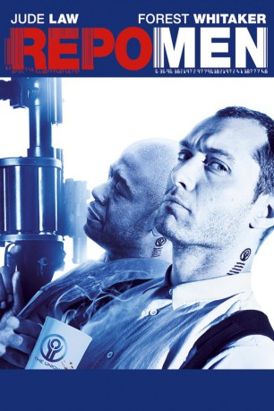

#589 Repo Men
 
 IMDB-Wertung: 6.3 / 10
IMDB-Wertung: 6.3 / 10  Metascore: 32
Metascore: 32 
In der futuristischen Welt des Actionthrillers "Repo Men" haben sich zahllose Menschen mit hoch entwickelten künstlichen Organen ihr Leben verlängern lassen. Die Schattenseite dieser medizinischen Revolution, die von der so genannten Union vertrieben wird, findet sich wie gewohnt im Kleingedruckten. Wer die horrenden Raten für die verführerischen oder lebensnotwendigen Hightech-Organe nicht zahlen kann, bekommt Besuch von den perfekt geschulten Eintreibern, die auf direktem Weg zurückholen, was der Union gehört. Und das ohne jede Rücksicht auf Verluste, denn kaum einer überlebt die Rückhol-Operationen der "Repo Men".
Jahr: 2010
Dauer: 111 Minuten
FSK: 16
Land: USA Studio: Universal PicturesTonspuren: DTS - ,
Untertitel:
Auflösung: 1080p (1920x816) Größe: 8079 MB
Genre: Action, Krimi, Sci-Fi, Thriller
Regisseur: Miguel Sapochnik
Drehbuch: Eric Garcia, Garrett Lerner, Eric Garcia
Soundtrack: Marco Beltrami
Darsteller:
 Jude Law als Remy
Jude Law als Remy Forest Whitaker als Jake
Forest Whitaker als Jake Alice Braga als Beth
Alice Braga als Beth Liev Schreiber als Frank
Liev Schreiber als Frank Carice van Houten als Carol
Carice van Houten als Carol- Chandler Canterbury als Peter
 Joe Pingue als Ray
Joe Pingue als Ray Liza Lapira als Alva
Liza Lapira als Alva Tiffany Espensen als Little Alva
Tiffany Espensen als Little Alva Yvette Nicole Brown als Rhodesia
Yvette Nicole Brown als Rhodesia RZA als T-Bone
RZA als T-Bone Tanya Clarke als Hooker
Tanya Clarke als Hooker- Marty Adams als Obese Man
- Christian Lloyd als Addict
 Carlos Diaz als Cab Passenger
Carlos Diaz als Cab Passenger Imali Perera als Q Nurse
Imali Perera als Q Nurse- Tannis Burnett als Hallway Nurse
 Michael Cram als Father
Michael Cram als Father- Heather Hodgson als Remy's Female Customer
 Jim Annan als TSA Guard
Jim Annan als TSA Guard Simon Northwood als TSA Agent
Simon Northwood als TSA Agent- John MacDonald als TSA Agent
 Neil Whitely als Passenger
Neil Whitely als Passenger- Marium Carvell als Passenger
- Daniel Lévesque als Curious Man
- Michal Grajewski als Repo Trainee
- Zoe Doyle als Technician
- Katie Bergin als Woman in Bathroom
- Tino Monte als Newsman
 Kevin Rushton als Artiforg Arm
Kevin Rushton als Artiforg Arm- Alicia Turner als Repo Woman
- Angelina Assereto als Bikini Girl
 Matt Baram als Doctor
Matt Baram als Doctor Rob Archer als No Neck , uncredited
Rob Archer als No Neck , uncredited Robin Atkin Downes als News reporter , uncredited
Robin Atkin Downes als News reporter , uncredited- Gavin Fox als Muscular Boyfriend , uncredited
- Ashleigh Hubbard als Hot Girlfriend , uncredited
- Dorly Jean-Louis als Hooker , uncredited
 John Leguizamo als Asbury , uncredited
John Leguizamo als Asbury , uncredited- Kathryn Michelle als Commercial Jogging Woman , uncredited
- Kristina Pesic als Dancing Girl #2 , uncredited
- Jessica Phillips als Dancer , uncredited
- Erin Reese als Hot Commercial Girl , uncredited
- Sherry Shaoling als Sexy Asian Bride , uncredited
- Lina So als Sexy Asian Bride , uncredited
- Wayne Ward als John
- Max Turnbull als Larry the Lung
- Howard Hoover als Salesman
- Robert Dodds als Salesman
- Raff Law als Young Remy
Datei: X:\2010(N-Z)\Repo Men (2010, FSK16, 1920x816).mkv seit 11.03.2015
Festplatte: HD 2010(G-Z)-2011(A-F)
 Es gibt insgesamt 115 Filme in der Gruppe '2010(N-Z)'
Es gibt insgesamt 115 Filme in der Gruppe '2010(N-Z)'